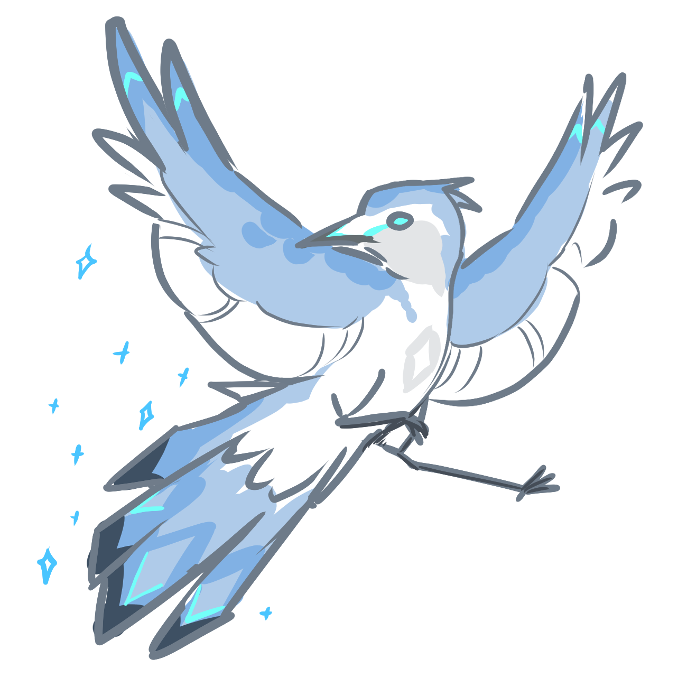
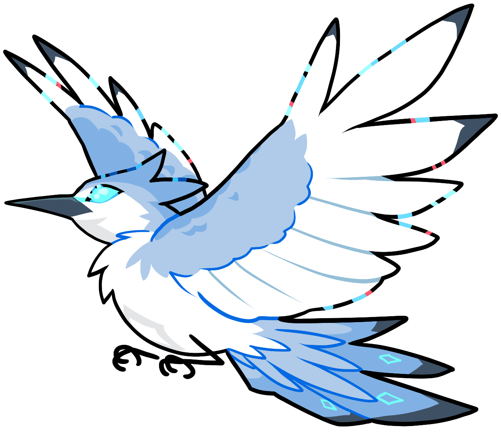
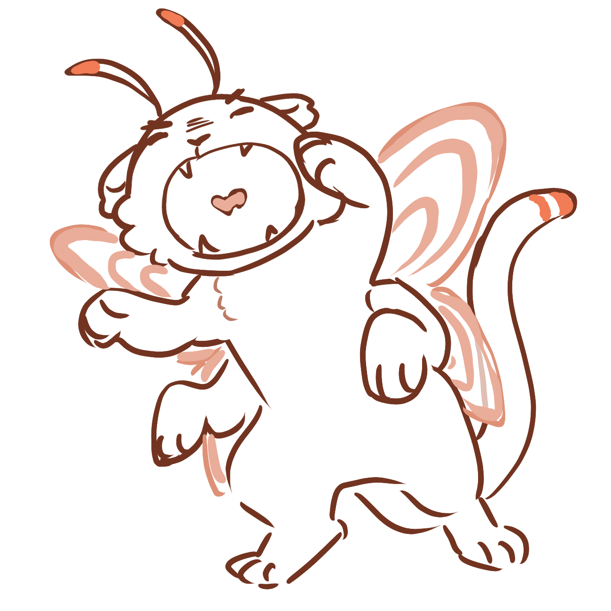
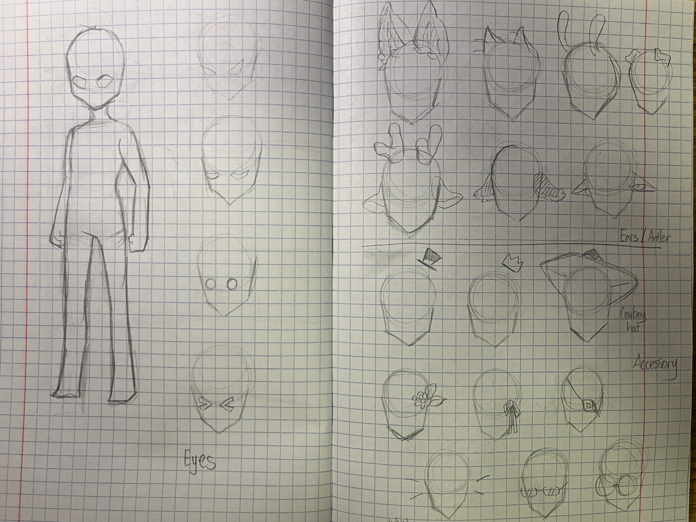
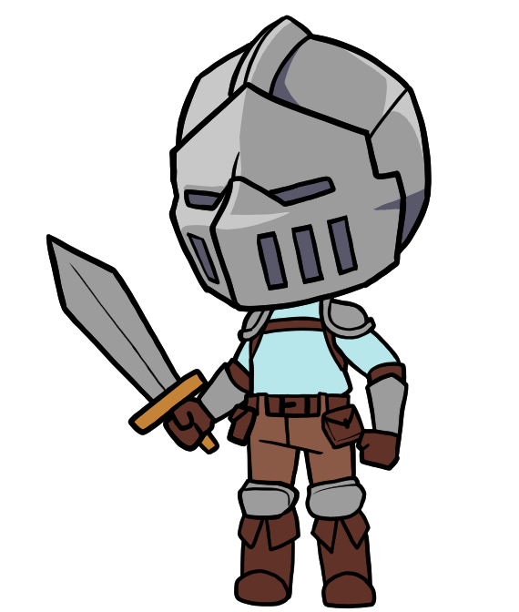
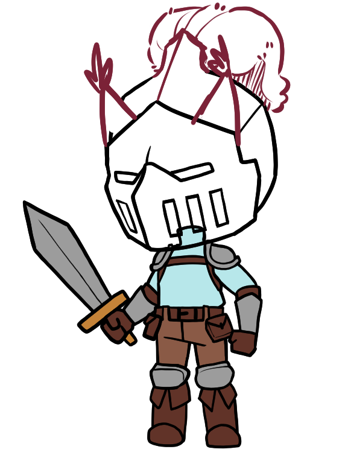
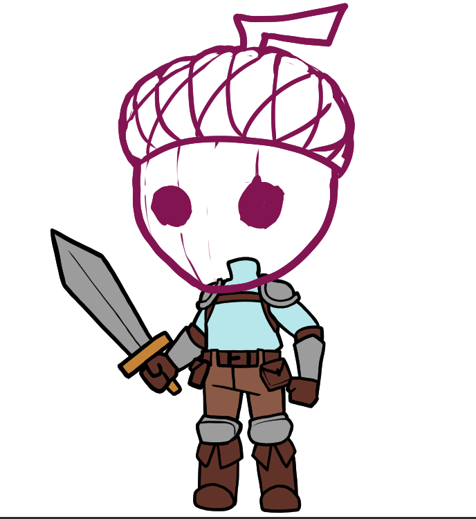
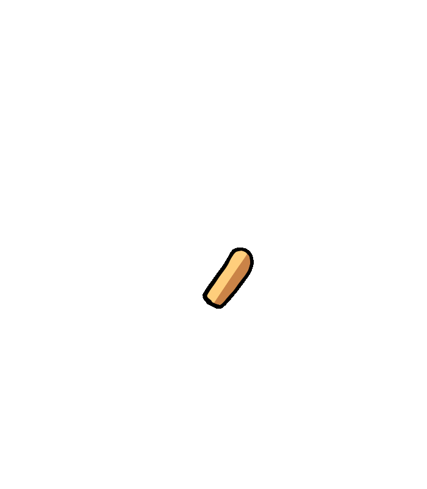
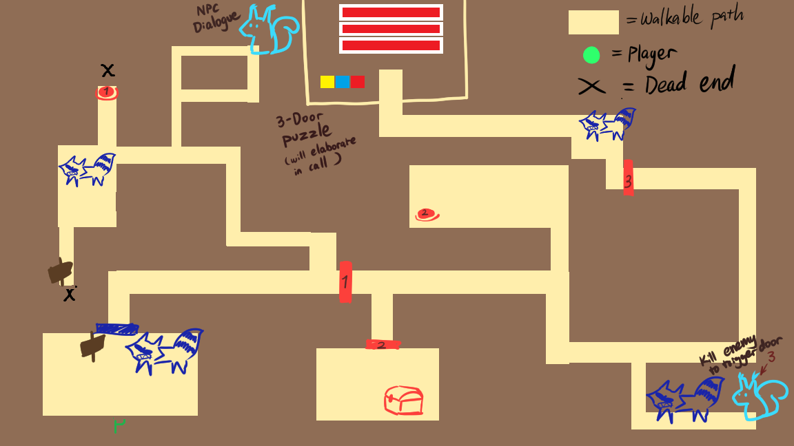
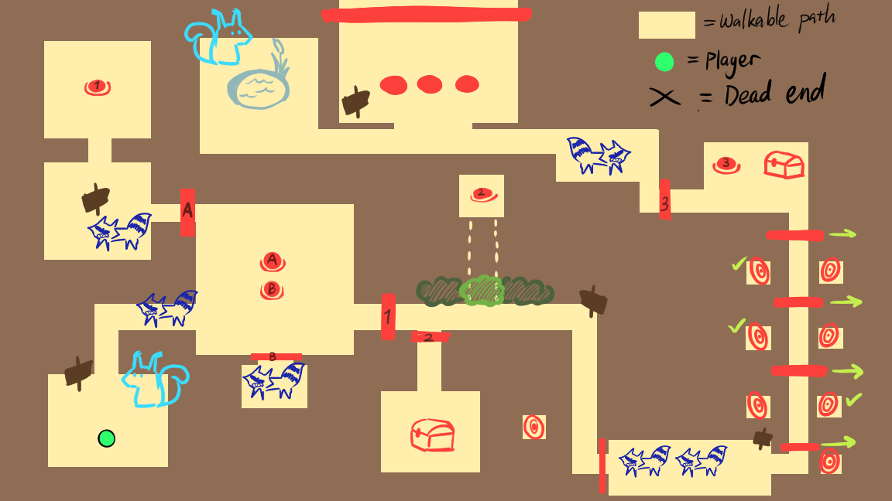

Quest For Dedoro
Play on itch.io!
Quest for Dendoro is a 2.5D game my cohort and I created for the Mills College Children's School, production spanning from late-October to December of 2025.
My Roles:
Character concept artist, sprite artist, animator, level designer, UI artist, title screen artist.

Concept Artwork






After interviewing the students of their interest in playable character(s), the team was given the impression that they enjoy customizability in the character they play as, from cosmetics to weapons. They show strong interest in a companion creature not limited to existing animals. As for aesthetics inspiration of games, the children favors cartoonish styles like Pokemon, Fall Guys, Eggy Party, and Animal Crossing. They favor things like clean line art, flexible details, vibrant colors, a chibi art style for the characters (the kind that is about 2-3 heads proportion), organic style overall, with a top-down perspective throughout the game, similar to Among Us.
First Iteration of Player Character



After conception of player character
Sprite Art & Animation
Player Character Animation (Unity Interface)
Idle animation
Walk animation
Attack animation
Hurt animation
Interact animation
Dead animation

Player character layers order
The player character is inspired by the player character from Spiral Knights, with a chibi proportion similar to what the children preferred and an obscurity on its identity to focus more on the customization of the outfit rather than facial and head features like hair and head accessories. Due to time constraint, majority of the promised customizability had to be simplified to customizability only on the overall color palette.
Scrapped Designs
The first version of the player
Level Design
Closely working with one of my cohort members, Nathan Lawson, we were actively working on the level designs, inspired by our favorite games such as Spiral Knights and several Kirby Games.

Forest biome: Level 1, Version 1
Inspired by Spiral Knights dungeon layouts, we want the players to explore a map with branching paths that leads them to relatively straightforward areas to press buttons to unlock doors and fight simple enemies.
